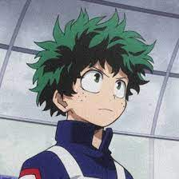

My Hero Academia
Izuku Midoriya( 緑 ( みどり ) 谷 ( や ) 出 ( いず ) 久 ( く ))
Izuku Midoriya which is also known as Deku is the main protaginist Even though Izuku was born Quirkless, he manages to catch the attention of the legendary Hero All Might, due to his innate heroism and a strong sense of justice, and has since become his close pupil, as well as a student in Class 1-A at U.A. High School. All Might passed on his Quirk to Izuku, making him the ninth wielder of One For All.